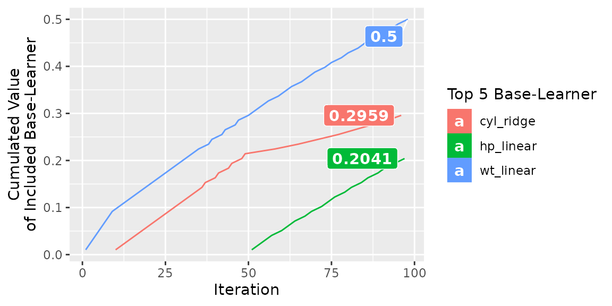
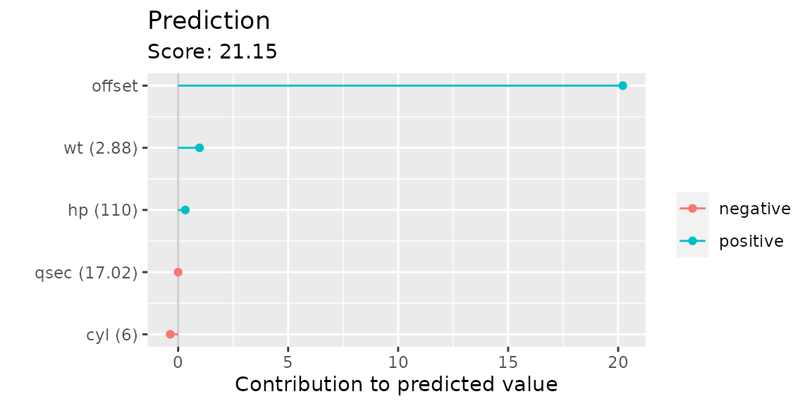
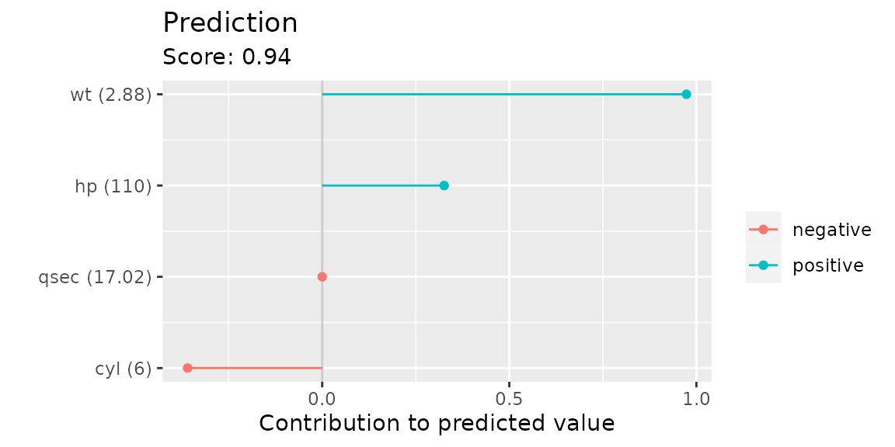
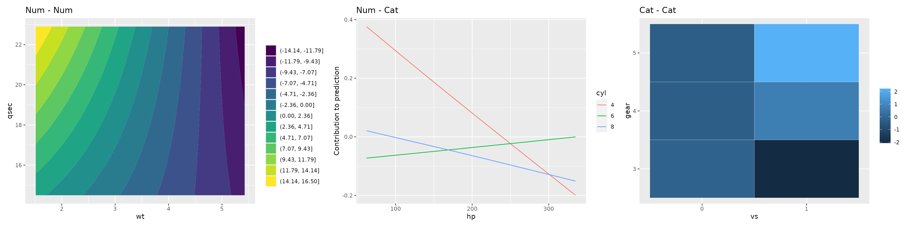

Visualizing a compboost model
visualizations.RmdCompboost comes with a variety of function to get deeper insights into a fitted model. Using these function allows to get different views on the model.
Fit compboost
The data set we use is mpg:
| mpg | cyl | disp | hp | drat | wt | qsec | vs | am | gear | carb | |
|---|---|---|---|---|---|---|---|---|---|---|---|
| Mazda RX4 | 21.0 | 6 | 160 | 110 | 3.90 | 2.620 | 16.46 | 0 | 1 | 4 | 4 |
| Mazda RX4 Wag | 21.0 | 6 | 160 | 110 | 3.90 | 2.875 | 17.02 | 0 | 1 | 4 | 4 |
| Datsun 710 | 22.8 | 4 | 108 | 93 | 3.85 | 2.320 | 18.61 | 1 | 1 | 4 | 1 |
| Hornet 4 Drive | 21.4 | 6 | 258 | 110 | 3.08 | 3.215 | 19.44 | 1 | 0 | 3 | 1 |
| Hornet Sportabout | 18.7 | 8 | 360 | 175 | 3.15 | 3.440 | 17.02 | 0 | 0 | 3 | 2 |
| Valiant | 18.1 | 6 | 225 | 105 | 2.76 | 3.460 | 20.22 | 1 | 0 | 3 | 1 |
We want to model the miles per gallon (mpg). As features we include the linear and centered spline of hp, wt, and qsec. Additionally, we add a categorical base learner for the number of cylinders cyl:
mtcars$cyl = as.factor(mtcars$cyl)
set.seed(31415)
cboost = Compboost$new(data = mtcars, target = "mpg", learning_rate = 0.02,
loss = LossQuadratic$new(), oob_fraction = 0.2)
cboost$addComponents("hp", df = 4)
cboost$addComponents("wt", df = 4)
cboost$addComponents("qsec", df = 4)
cboost$addBaselearner("cyl", "ridge", BaselearnerCategoricalRidge, df = 4)
cboost$train(500L, trace = 100L)
#> 1/500 risk = 17 oob_risk = 17
#> 100/500 risk = 3.3 oob_risk = 2.8
#> 200/500 risk = 2.3 oob_risk = 2.4
#> 300/500 risk = 2 oob_risk = 2.4
#> 400/500 risk = 1.8 oob_risk = 2.5
#> 500/500 risk = 1.7 oob_risk = 2.7
#>
#>
#> Train 500 iterations in 0 Seconds.
#> Final risk based on the train set: 1.7Visualize risk, feature importance, and selection traces
A first start when analyzing a component wise boosting model is to take a look at the train and validation risk:
plotRisk(cboost)
#> Warning: Removed 1 row(s) containing missing values (geom_path).
As we can see, the best validation risk is at iteration 238. Hence, we should set the model to this iteration:
m_optimal = which.min(cboost$getLoggerData()[["oob_risk"]])
cboost$train(m_optimal)Next, we are interested in the top base learners/features:
plotFeatureImportance(cboost)
The last thing we can do to get a more general overview of the model is to have a look how the features/base learners were included into the model:
plotBaselearnerTraces(cboost)
Visualize base learner and partial effects
Next, we want to deep dive into the effect of individual features or base learners. Therefore, we can plot the partial effects of the most important feature wt:
plotPEUni(cboost, "wt")We observe a clear negative trend, meaning that an increasing weight indicates lower mpg. Additionally, we can visualize individual base learners. For example the only categorical feature cyl:
plotBaselearner(cboost, "cyl_ridge")Here, we observe that 4 cylinder indicates a positive contribution to mpg while 6 and 8 cylinder are reducing it.
Visualizing individual predictions
Next, we want to calculate predictions. But, we also want to have the specific contribution each feature has to the prediction. Therefore we take a look at the first observation in the validation data set:
plotIndividualContribution(cboost, newdata = cboost$data_oob[1,])
As we can see, the prediction is dominated by the offset. To remove it from the figure we set offset = FALSE:
plotIndividualContribution(cboost, newdata = cboost$data_oob[1,], offset = FALSE)
The wt and hp do have a positive contribution to the predicted score which means the car requires less fuel while the 6 cylinder slightly increases the mpg prediction. Overall, the car has a positive difference compared to the offset of 20.2115385.
Visualizing tensor products
The last possibility of visualizing information of the model are interactions that are included as tensors. Therefore, we have to add tensors into the model:
mtcars$vs = as.factor(mtcars$vs)
mtcars$gear = as.factor(mtcars$gear)
set.seed(31415)
cboost = Compboost$new(data = mtcars, target = "mpg",
loss = LossQuadratic$new(), oob_fraction = 0.2)
cboost$addTensor("wt", "qsec", df = 4)
cboost$addTensor("hp", "cyl", df = 4)
cboost$addTensor("gear", "vs", df = 4)
cboost$train(500L, trace = 100L)
#> 1/500 risk = 16 oob_risk = 16
#> 100/500 risk = 0.93 oob_risk = 3.3
#> 200/500 risk = 0.79 oob_risk = 3.8
#> 300/500 risk = 0.76 oob_risk = 3.7
#> 400/500 risk = 0.73 oob_risk = 3.7
#> 500/500 risk = 0.71 oob_risk = 3.6
#>
#>
#> Train 500 iterations in 0 Seconds.
#> Final risk based on the train set: 0.71
table(cboost$getSelectedBaselearner())
#>
#> gear_vs_tensor hp_cyl_tensor wt_qsec_tensor
#> 53 128 319Depending on the feature combination (numeric - numeric, numeric - categorical, categorical - categorical) a different visualization technique is used:
gg1 = plotTensor(cboost, "wt_qsec_tensor") + ggtitle("Num - Num")
gg2 = plotTensor(cboost, "hp_cyl_tensor") + ggtitle("Num - Cat")
gg3 = plotTensor(cboost, "gear_vs_tensor") + ggtitle("Cat - Cat")
gridExtra::grid.arrange(gg1, gg2, gg3, ncol = 3L)